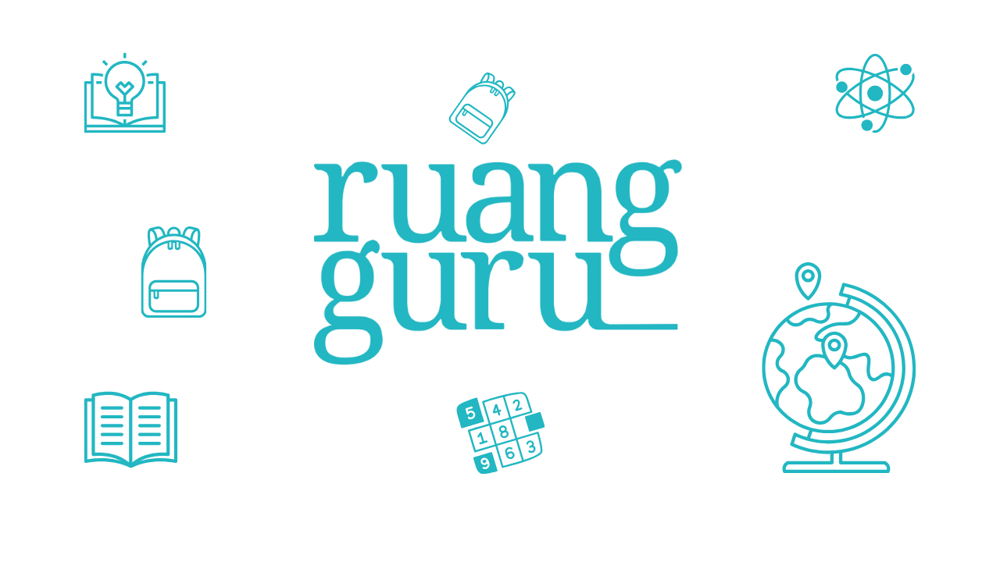
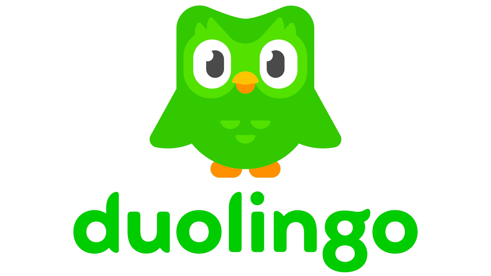
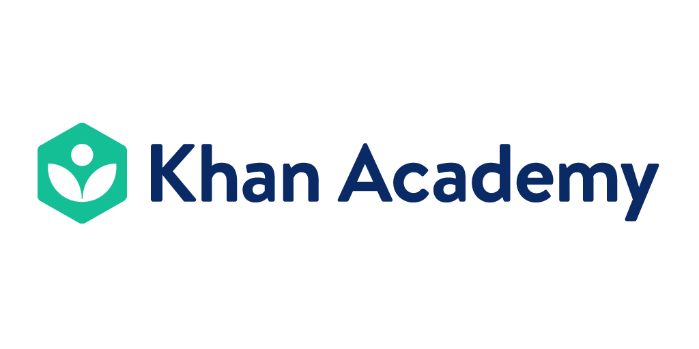

Rehabilitasi dengan VR
VR dapat membantu pemulihan stroke sebagai tambahan terapi, dan latihan geraknya bisa dikemas seperti game serta dipantau.
Healthcare, Education, dan Entertainment
SENDY PRASETYA NUGRAHA · 1412240078
RENDY EKA ARIYANTO · 1412240074
Tekan tombol panah atau geser layar untuk mulai
Multimedia menggabungkan beberapa jenis media dalam satu pengalaman, sehingga informasi lebih mudah dipahami dan diingat.
Pasien yang paham kondisinya cenderung lebih patuh berobat. Visual membantu pemahaman itu.
Konsultasi lewat video dan chat tanpa ke klinik.
CT dan MRI diolah menjadi model 3D.
Simulasi untuk rehabilitasi dan fobia.
Animasi yang menjelaskan prosedur sederhana.
VR dapat membantu pemulihan stroke sebagai tambahan terapi, dan latihan geraknya bisa dikemas seperti game serta dipantau.

Aplikasi seperti Complete Anatomy dipakai mahasiswa kedokteran dan dokter untuk menjelaskan struktur tubuh.

Layanan seperti Halodoc memungkinkan konsultasi video dengan dokter, berguna bagi daerah yang jauh dari fasilitas kesehatan.
Arahkan kursor, ketuk, atau fokuskan titik di tubuh untuk melihat teknologinya.
Penjelasan teknologi akan muncul di sini.

Video belajar, latihan soal, dan kelas online untuk pelajar Indonesia dalam satu aplikasi. Contoh paling dekat dengan kita karena memakai kurikulum lokal.

Latihan singkat, audio, dan streak yang membangun kebiasaan harian.

Video pendek dan latihan interaktif gratis sesuai kecepatan murid.
Film, musik, dan podcast sesuai permintaan.
Grafik, suara, dan interaksi real-time.
CGI dan motion capture menghidupkan dunia fiksi.
Siapa saja bisa memproduksi dan menyebarkan video.
Pilih satu contoh.
| Industri | Dampak positif |
|---|
Rekomendasi lebih personal, asisten belajar, dan bantuan membaca citra medis. Perlu etika dan transparansi.
Pelatihan bedah, kelas imersif, dan hiburan interaktif makin terjangkau.
Teks otomatis dan deskripsi gambar membuat multimedia bisa dinikmati lebih luas.
Multimedia mengubah cara layanan kesehatan dijelaskan, ilmu dipelajari, dan hiburan dinikmati.
Manfaatnya besar, tetapi privasi, kecanduan, dan kesenjangan akses harus dikelola.
AI dan VR akan memperluas dampaknya, jadi literasi digital makin penting.
Gambar slide 4: Unsplash (Getty Images, 8Machine). Gambar slide 7: press kit Ruangguru, Duolingo, dan Khan Academy. Video slide 10: YouTube (judul dan kanal tertera di bawah tiap video). Palet: Color Hunt. Font: Plus Jakarta Sans (Google Fonts).